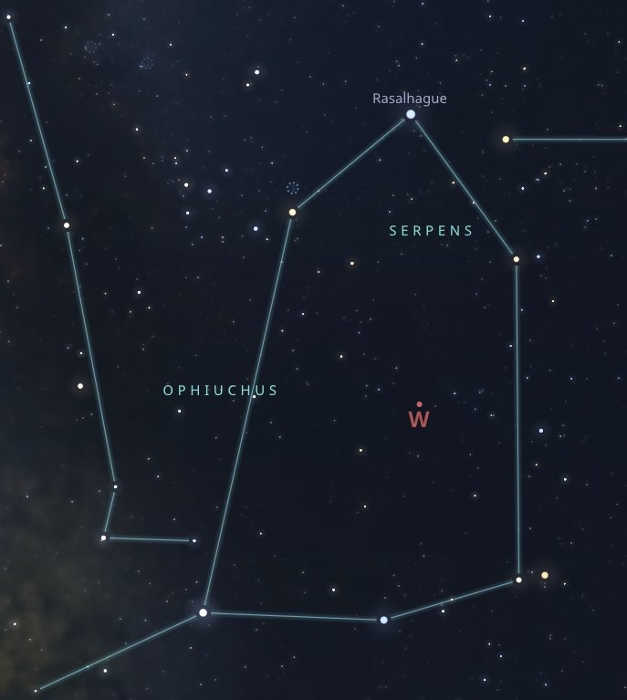
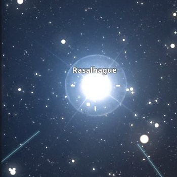
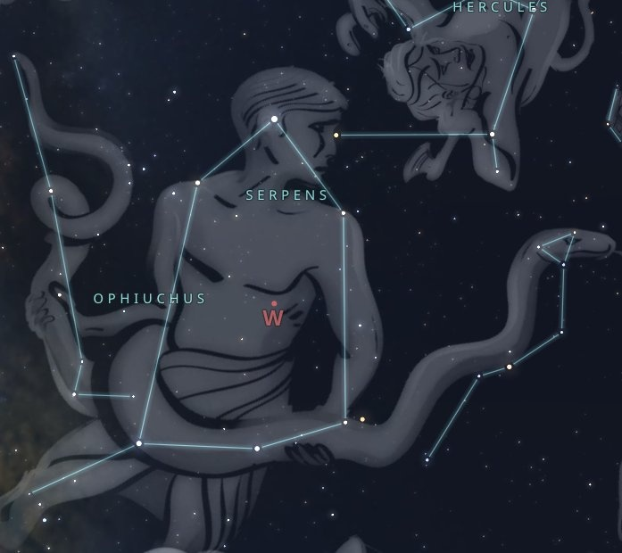

Как это началось
Она — из Магнитогорска. Он — из Москвы.
Шанс встретиться был ничтожно мал.
Но 27 мая они встретились, соединив сердца вопреки теории вероятностей.
И гравитация сделала всё остальное.
Наши фото

Созвездие Змееносца (Stellarium)

Рас Альхаг — оптический зум ×500
фото 1
фото 2
13 мая 2021 · 10 000 метров
Рейс Магнитогорск — Москва.
В кармане — кольцо. Не купленное.
Сделанное своими руками на тайном мастер-классе.
Тринадцатое. Четверг. Не пятница — но всё равно
против суеверий. Как всегда.
Созвездие Змееносца в атласе

Гравюра Змееносца (α Ophiuchi — во главе созвездия)
Тот день: 13 мая 2021
видео или фото с предложением
Наша константа
27 · 05
Встретились
Москва ↔ Магнитогорск
13 · 05 · 2021
Предложение на высоте 10 000 м
Кольцо ручной работы. Четверг, 13-е.
27 · 11
День рождения Юлии
(и почти — Антона)
27 · 12 · 2021
Свадьба
Наша годовщина
27 · 06
Забрал из роддома
Нас стало трое
Наши моменты
фото
фото
фото
фото
фото
фото
Говорят, мы несовместимы.
Говорят, звёзды предрекают нам разное.
Пусть звёзды бессильно освещают наш счастливый путь —
им не дано указывать, что нам уготовано.
Антон & Юлия · с 27.05 навсегда